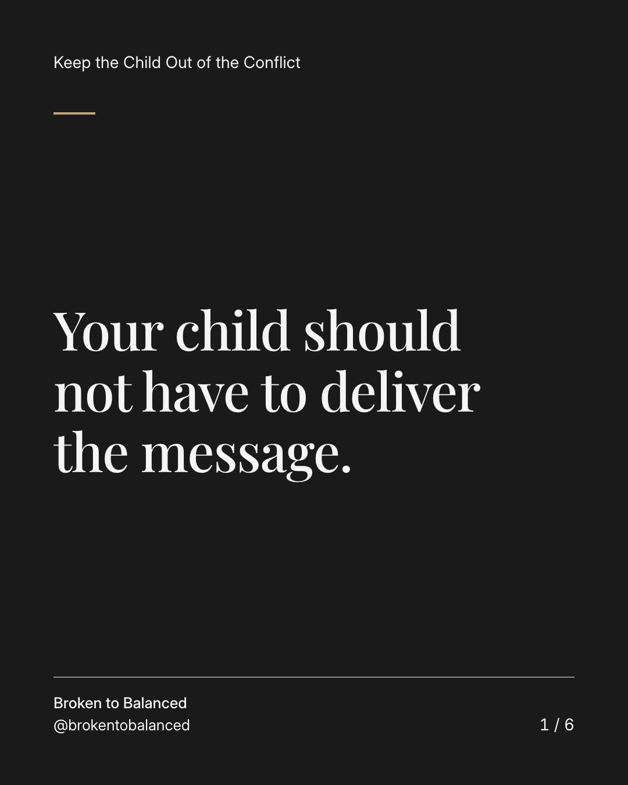
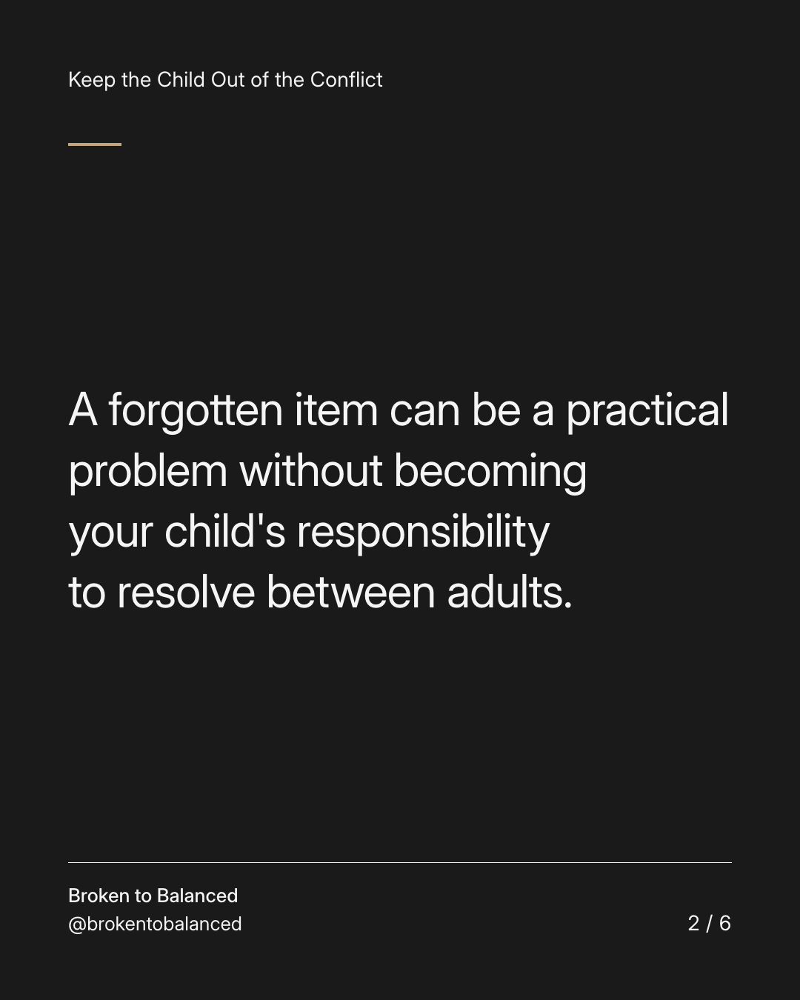
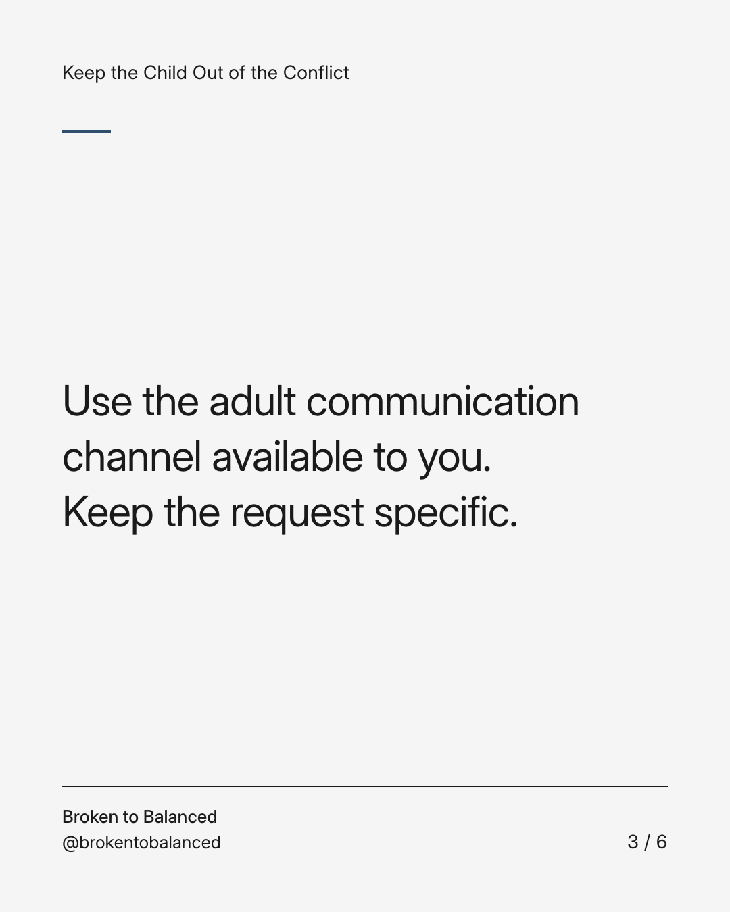
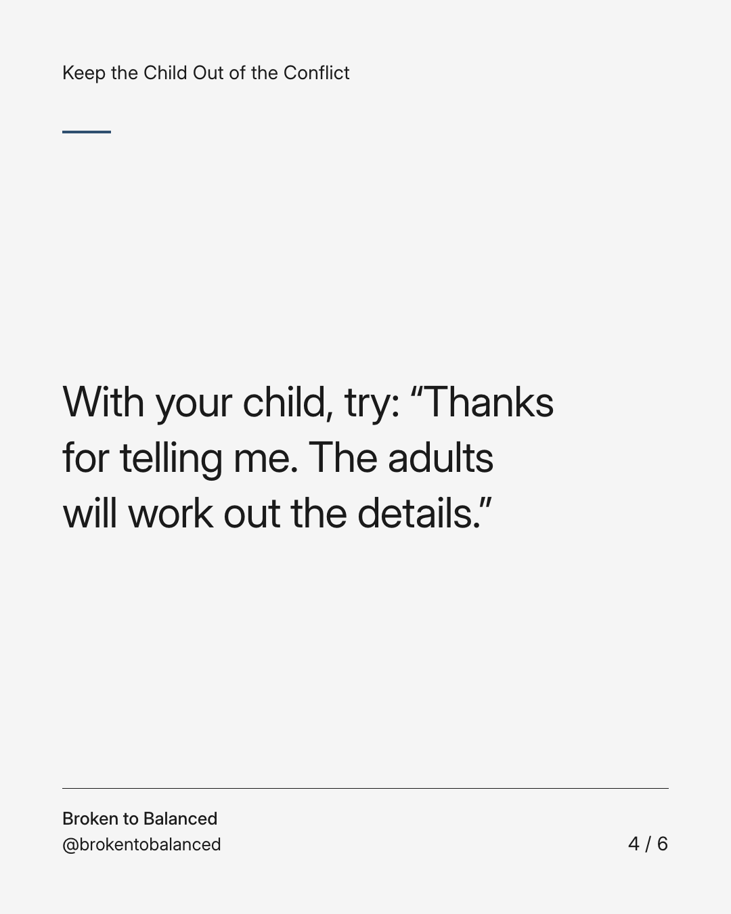
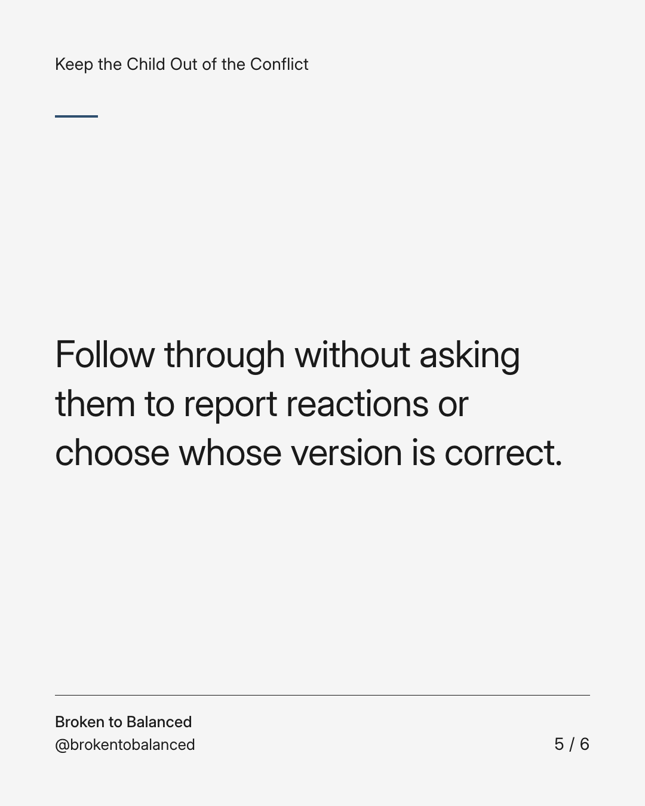
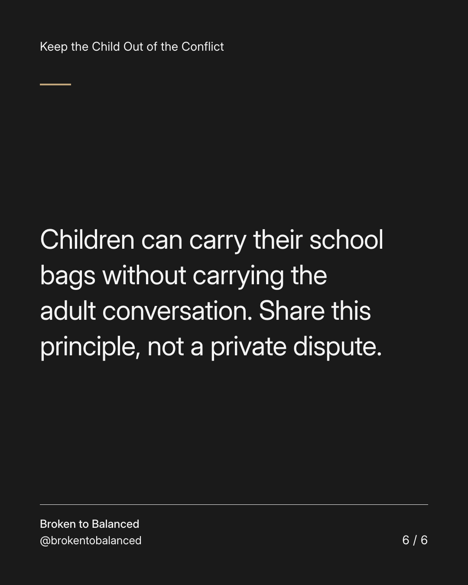

Exact text and accessibility text
Your child should not have to deliver the message.
Slide 1 of 6. Your child should not have to deliver the message.


Exact text and accessibility text
A forgotten item can be a practical problem without becoming your child's responsibility to resolve between adults.
Slide 2 of 6. A forgotten item can be a practical problem without becoming your child's responsibility to resolve between adults.


Exact text and accessibility text
Use the adult communication channel available to you. Keep the request specific.
Slide 3 of 6. Use the adult communication channel available to you. Keep the request specific.


Exact text and accessibility text
With your child, try: “Thanks for telling me. The adults will work out the details.”
Slide 4 of 6. With your child, try: “Thanks for telling me. The adults will work out the details.”


Exact text and accessibility text
Follow through without asking them to report reactions or choose whose version is correct.
Slide 5 of 6. Follow through without asking them to report reactions or choose whose version is correct.


Exact text and accessibility text
Children can carry their school bags without carrying the adult conversation. Share this principle, not a private dispute.
Slide 6 of 6. Children can carry their school bags without carrying the adult conversation. Share this principle, not a private dispute.
Exact caption
Plain-text fallback: select and copy the caption.